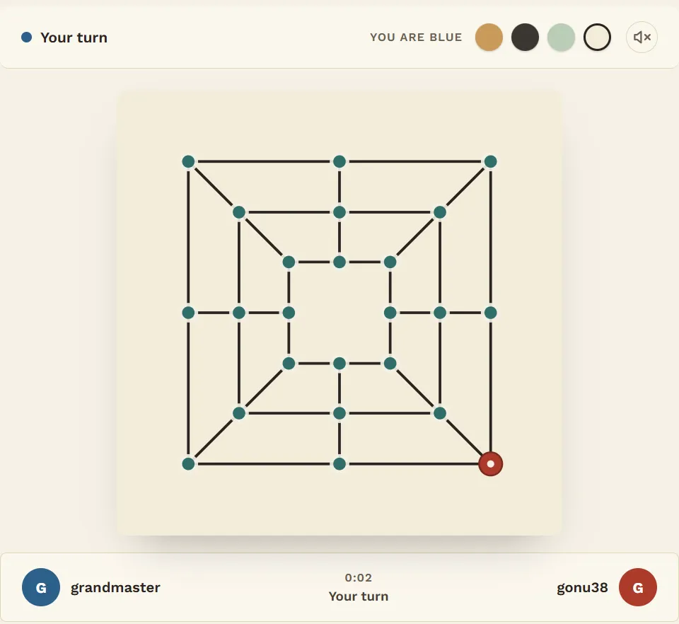
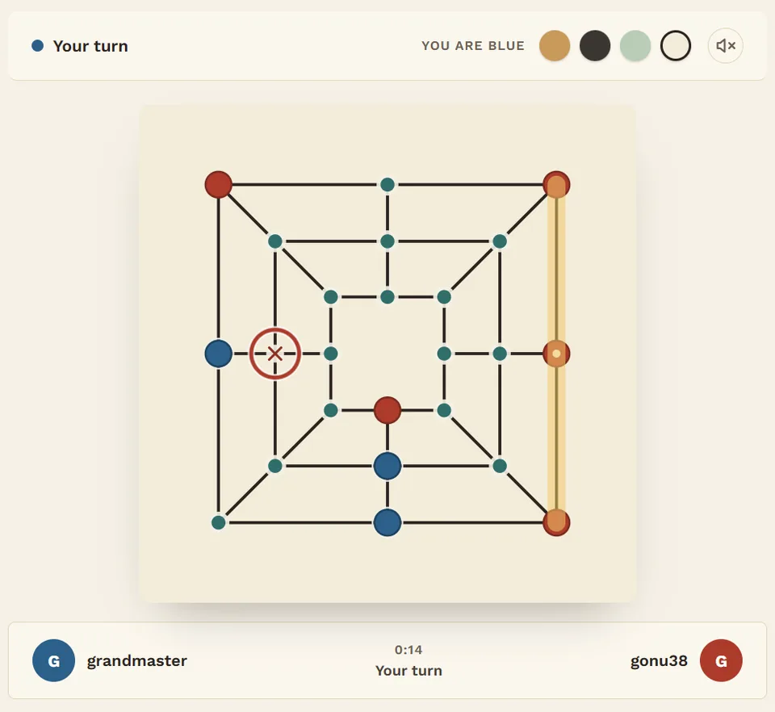
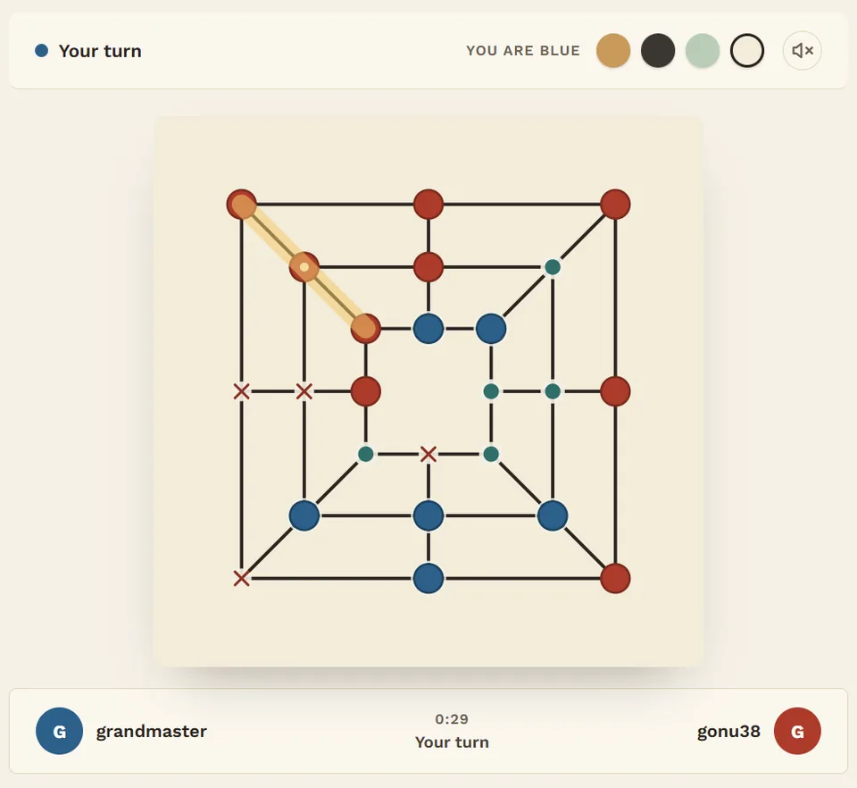
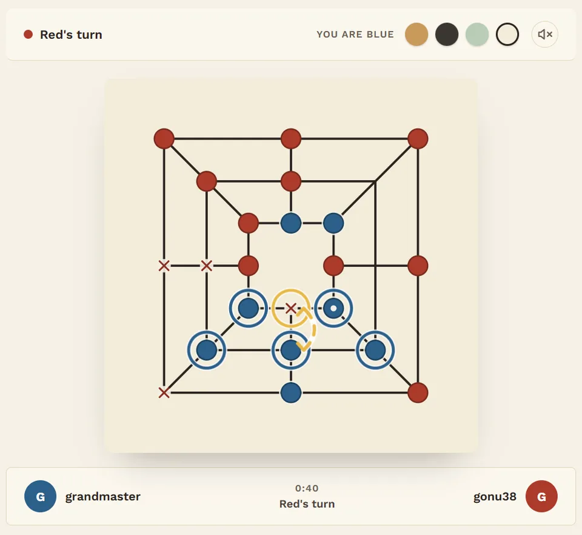
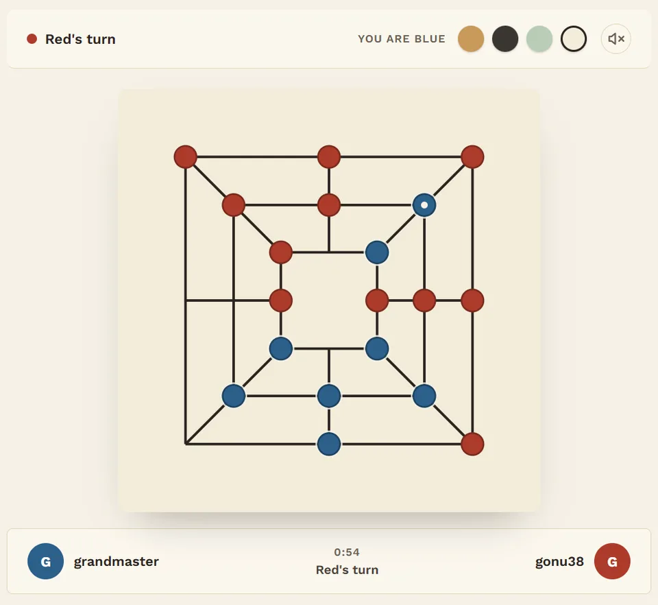
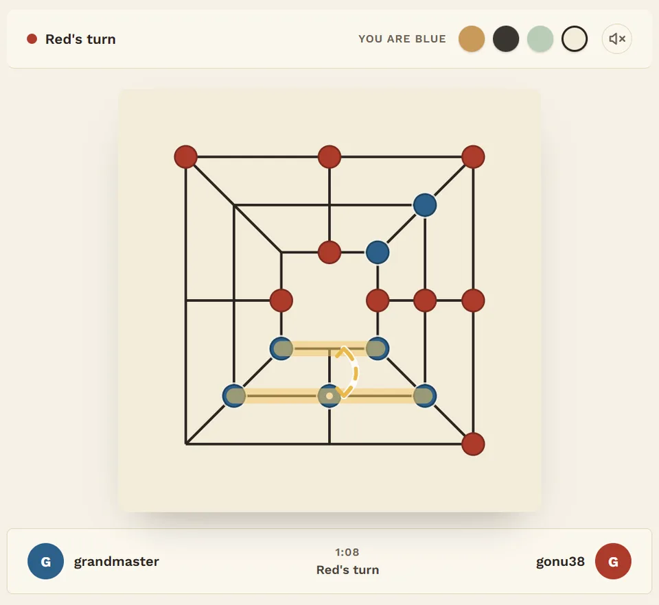
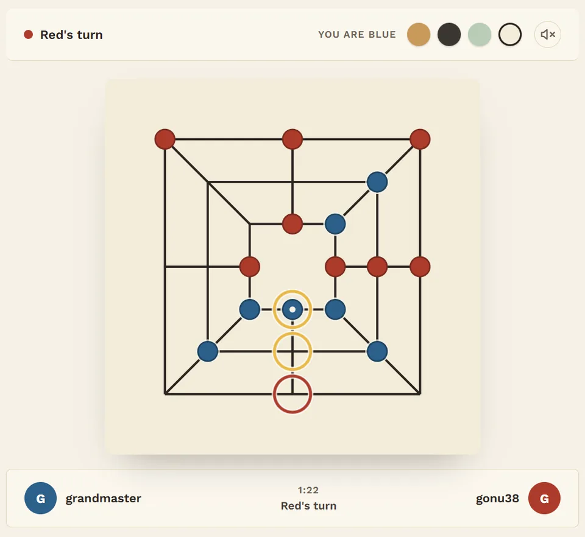
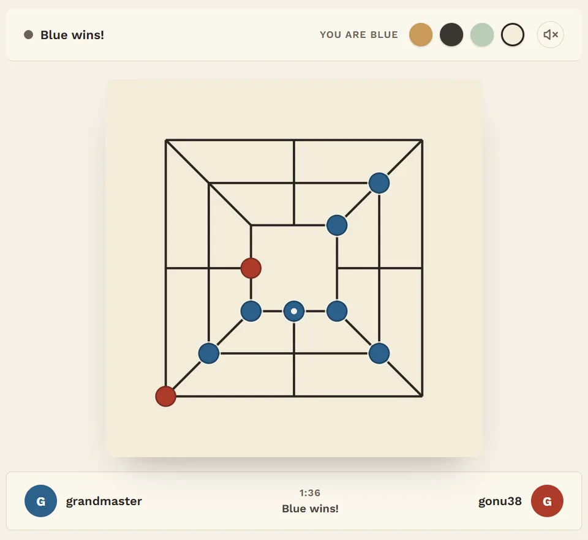

El molino corredizo: así se gana de verdad al Cham-gonu
El Cham-gonu es el juego más profundo de la familia coreana del Gonu: dos jugadores, 12 piezas cada uno y un tablero de 24 puntos formado por tres cuadrados concéntricos. Puedes ir por delante durante toda la primera mitad y aun así perder, y casi siempre por la misma razón: tu rival armó un molino corredizo (running mill). Esta guía repasa una partida real en la que pasa justo eso, y luego te enseña a armar uno y a frenarlo.
El tablero en 30 segundos
Los 24 puntos están sobre tres cuadrados concéntricos. Unas líneas unen el punto medio de cada lado a través de los tres cuadrados y, a diferencia de los juegos de molino occidentales, las esquinas también se unen con diagonales. Eso da 20 líneas en las que tres de tus piezas forman un molino. No todos los puntos valen lo mismo:
| Punto | Vecinos | Líneas que pasan por él |
|---|---|---|
| Cuadrado del medio, esquina | 4 | 3 |
| Cuadrado del medio, centro de lado | 4 | 2 |
| Cuadrado exterior / interior, esquina | 3 | 3 |
| Cuadrado exterior / interior, centro de lado | 3 | 2 |
Las cuatro esquinas del cuadrado del medio son los mejores puntos del tablero: dan más libertad de movimiento y forman parte de más molinos. Eso sí, la jugada de apertura está restringida: tiene que ir en una de las cuatro esquinas exteriores.
Míralo en acción: una partida real
Rojo mueve primero. No pierdas de vista el lado inferior de Azul: durante casi toda la primera mitad parece inofensivo.








Cómo armar un molino corredizo
- Dos lados paralelos y un puente. Elige dos lados unidos por una línea recta, por ejemplo el lado inferior del cuadrado del medio y el del cuadrado interior. Ocupa las dos esquinas de cada lado y deja una pieza en el puente.
- Haz que el hueco sea inalcanzable. El punto que deja libre tu pieza de ida y vuelta no debe tocar ninguna pieza rival; si no, tu rival se mete y lo atasca. Lo ideal es el centro de un lado del cuadrado exterior o interior: sus únicos vecinos son tus dos esquinas y el puente.
- Constrúyelo durante la colocación. En cuanto empieza la segunda mitad, ya no se puede colocar nada nuevo. Dedica jugadas de la primera mitad a la estructura aunque eso suponga dejar que tu rival forme algunos molinos; es justo lo que hizo Azul.
- Las capturas pueden abrirte el hueco. Un punto que vacías al capturar durante la colocación no se puede volver a ocupar hasta que empiezan los movimientos: un agujero listo para tu puente.
Cómo frenarlo
- Ocupa pronto un punto de la estructura. Un molino corredizo necesita cinco puntos. Ocupa cualquiera de ellos durante la colocación y todo se viene abajo.
- Bloquea el hueco… antes de que se cierre el molino. Ponerte junto al hueco solo sirve si tu pieza sobrevive; como muestra la partida de arriba, el molino corredizo captura primero a la pieza que intenta bloquearlo.
- Contraataca por el lado abierto. Cada vez que la pieza de ida y vuelta abandona un molino, las dos piezas que deja atrás quedan desprotegidas. Cierra un molino propio y captura una de ellas.
- Cuenta los movimientos. Si tu rival no tiene ninguna jugada legal en su turno, ganas directamente; con el tablero tan lleno, los bloqueos son frecuentes.
Pruébalo tú mismo
La IA Maestro sabe armar molinos corredizos y defenderse de ellos. A ver si consigues que el tuyo funcione primero.